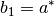
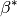
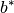
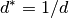
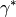

This is a Python binding to the C++ class Mantid::Geometry::UnitCell. The methods on this class follow naming conventions for parameters as defined in the International Tables for Crystallography.
mantid.geometry.UnitCell¶a((UnitCell)self) → float :¶Returns the length of the  direction of the unit cell in
direction of the unit cell in  .
.
a1((UnitCell)self) → float :¶Returns the length of the  direction of the unit cell. This is an alias for
direction of the unit cell. This is an alias for a().
a2((UnitCell)self) → float :¶Returns the length of the  direction of the unit cell. This is an alias for
direction of the unit cell. This is an alias for b().
a3((UnitCell)self) → float :¶Returns the length of the  direction of the unit cell. This is an alias for
direction of the unit cell. This is an alias for c().
alpha((UnitCell)self) → float :¶Returns the  angle for this unit cell in degrees.
angle for this unit cell in degrees.
alphastar((UnitCell)self) → float :¶Returns the reciprocal angle for this unit cell in degrees.
astar((UnitCell)self) → float :¶Returns the length of the reciprocal direction for this unit cell in reciprocal .
b((UnitCell)self) → float :¶Returns the length of the  direction of the unit cell in .
direction of the unit cell in .
b1((UnitCell)self) → float :¶Returns the length of the  direction of the unit cell. This is an alias for astar().
b2((UnitCell)self) → float :¶Returns the length of the  direction of the unit cell. This is an alias for
direction of the unit cell. This is an alias for bstar().
b3((UnitCell)self) → float :¶Returns the length of the  direction of the unit cell. This is an alias for
direction of the unit cell. This is an alias for cstar().
beta((UnitCell)self) → float :¶Returns the  angle for this unit cell in degrees.
angle for this unit cell in degrees.
beta1((UnitCell)self) → float :¶Returns the  angle of the unit cell in radians. See also
angle of the unit cell in radians. See also alphastar().
beta2((UnitCell)self) → float :¶Returns the  angle of the unit cell in radians. See also
angle of the unit cell in radians. See also betastar().
beta3((UnitCell)self) → float :¶Returns the  angle of the unit cell in radians. See also
angle of the unit cell in radians. See also gammastar().
betastar((UnitCell)self) → float :¶Returns the  angle for this unit cell in degrees.
bstar((UnitCell)self) → float :¶Returns the length of the  direction for this unit cell in reciprocal .
c((UnitCell)self) → float :¶Returns the length of the  direction of the unit cell in .
direction of the unit cell in .
cstar((UnitCell)self) → float :¶Returns the length of the  direction for this unit cell in reciprocal .
direction for this unit cell in reciprocal .
d((UnitCell)self, (float)h, (float)k, (float)l) → float :¶Returns  -spacing for a given H, K, L coordinate in .
-spacing for a given H, K, L coordinate in .
-spacing for a given H, K, L coordinate in .dstar((UnitCell)self, (float)h, (float)k, (float)l) → float :¶Returns  for a given H, K, L coordinate in  .
.
errora((UnitCell)self) → float :¶Returns the error in the unit cell length.
erroralpha((UnitCell)self[, (int)Unit=0]) → float :¶Returns the error in the angle of the unit cell.
errorb((UnitCell)self) → float :¶Returns the error in the unit cell length.
errorbeta((UnitCell)self[, (int)Unit=0]) → float :¶Returns the error in angle of the unit cell.
errorc((UnitCell)self) → float :¶Returns the error in the unit cell length.
errorgamma((UnitCell)self[, (int)Unit=0]) → float :¶Returns the error in  angle of the unit cell.
angle of the unit cell.
gamma((UnitCell)self) → float :¶Returns the angle for this unit cell in degrees.
gammastar((UnitCell)self) → float :¶Returns the  angle for this unit cell in degrees.
getB((UnitCell)self) → numpy.ndarray :¶Returns the  matrix for this unit cell. This will be in a right-handed coordinate system and using the Busing-Levy convention. This will return a
matrix for this unit cell. This will be in a right-handed coordinate system and using the Busing-Levy convention. This will return a numpy.ndarray with shape (3,3).
getBinv((UnitCell)self) → numpy.ndarray :¶Returns the inverse of the matrix for this unit cell.This will return a numpy.ndarray with shape (3,3). See also getB().
getG((UnitCell)self) → numpy.ndarray :¶Returns the metric tensor for the unit cell. This will return a numpy.ndarray with shape (3,3).
getGstar((UnitCell)self) → numpy.ndarray :¶Returns the metric tensor for the reciprocal unit cell. This will return a numpy.ndarray with shape (3,3).
getMaxOrder((UnitCell)self) → int :¶Returns the number of modulation vectors. This will return an int.
getModHKL((UnitCell)self) → numpy.ndarray :¶Returns the  matrix for this unit cell. This will be in a right-handed coordinate system and using the Busing-Levy convention. This will return a
matrix for this unit cell. This will be in a right-handed coordinate system and using the Busing-Levy convention. This will return a numpy.ndarray with shape (3,3).
getModVec((UnitCell)self, (int)i) → V3D :¶Returns the ith modulation vector
recAngle((UnitCell)self, (float)h1, (float)k1, (float)l1, (float)h2, (float)k2, (float)l2[, (int)Unit=0]) → float :¶Returns the angle in reciprocal space between vectors given by ( ) and (
) and ( ) (in degrees or radians). The optional parameter
) (in degrees or radians). The optional parameter Unit controls the units for the angles, and can have the value of Degrees or Radians. By default Unit = Degrees
recVolume((UnitCell)self) → float :¶Return the volume of the reciprocal unit cell (in  )
)
recalculateFromGstar((UnitCell)self, (object)NewGstar) → None :¶Recalculate the unit cell parameters from a metric tensor. This method accepts a numpy.ndarray with shape (3,3).
set((UnitCell)self, (float)_a, (float)_b, (float)_c, (float)_alpha, (float)_beta, (float)_gamma[, (int)Unit=0]) → None :¶Set the parameters of the unit cell. Angles can be set in eitherdegrees or radians using the Unit parameter (0 = degrees, 1 = radians)
setError((UnitCell)self, (float)_aerr, (float)_berr, (float)_cerr, (float)_alphaerr, (float)_betaerr, (float)_gammaerr[, (int)Unit=0]) → None :¶Set the errors in the unit cell parameters.
setErrora((UnitCell)self, (float)_aerr) → None :¶Set the error in the length of the direction of the unit cell.
setErroralpha((UnitCell)self, (float)_alphaerr[, (int)Unit=0]) → None :¶Set the error in the angle of the unit cell.
setErrorb((UnitCell)self, (float)_berr) → None :¶Set the error in the length of the direction of the unit cell.
setErrorbeta((UnitCell)self, (float)_betaerr[, (int)Unit=0]) → None :¶Set the error in the angle of the unit cell using the Unit parameter.
setErrorc((UnitCell)self, (float)_cerr) → None :¶Set the error in the length of the direction of the unit cell.
setErrorgamma((UnitCell)self, (float)_gammaerr[, (int)Unit=0]) → None :¶Set the error in the angle of the unit cell using the Unit parameter.
setMaxOrder((UnitCell)arg1, (int)arg2) → None :¶Set the maximum order of modulated vectors searched
setModVec1((UnitCell)self, (V3D)vec) → None :¶Set the first modulated structure vector
setModVec2((UnitCell)self, (V3D)vec) → None :¶Set the second modulated structure vector
setModVec3((UnitCell)self, (V3D)vec) → None :¶Set the third modulated structure vector
seta((UnitCell)self, (float)_a) → None :¶Set the length of the direction of the unit cell.
setalpha((UnitCell)self, (float)_alpha[, (int)Unit=0]) → None :¶Set the angle of the unit cell. The angle can be set either in degrees or radians using the Unit parameter.
setb((UnitCell)self, (float)_b) → None :¶Set the length of the direction of the unit cell.
setbeta((UnitCell)self, (float)_beta[, (int)Unit=0]) → None :¶Set the angle of the unit cell. The angle can be set either in degrees or radians using the Unit parameter.
setc((UnitCell)self, (float)_c) → None :¶Set the length of the direction of the unit cell.
setgamma((UnitCell)self, (float)_gamma[, (int)Unit=0]) → None :¶Set the angle of the unit cell. The angle can be set either in degrees or radians using the Unit parameter.
volume((UnitCell)self) → float :¶Return the volume of the unit cell (in  )
)
 angle of the unit cell in radians. See also
angle of the unit cell in radians. See also  angle of the unit cell in radians. See also
angle of the unit cell in radians. See also  angle of the unit cell in radians. See also
angle of the unit cell in radians. See also